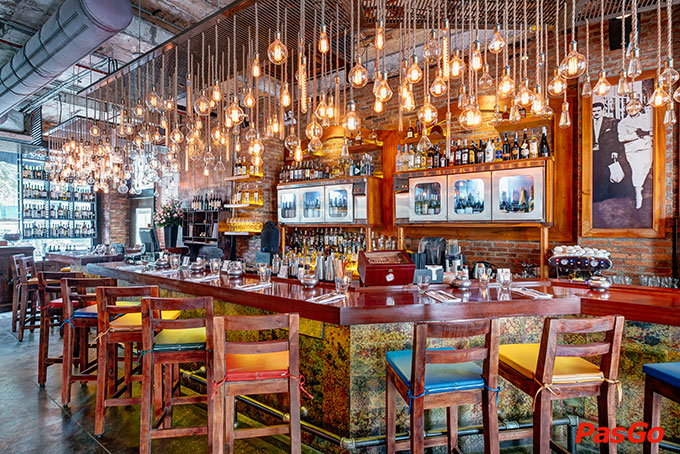

Có Gì Tại Top 4 Nhà Hàng Sang Trọng Nhất Sài Gòn
Đã bao lâu rồi bạn chưa tự thưởng cho bản thân những trãi nghiệm cao cấp, những địa chỉ sang chảnh cùng bạn bè. Cuộc đời là những ngày tháng trãi nghiệm dù xa xỉ hay bình thường thì chúng ta cũng hướng tới những giá trị mới cao hơn.
1. Sorae Restaurant – Lounge
Sorae là một trong những nhà hàng Nhật Bản có tầm nhìn ngoạn mục nhất và cũng là điểm đến lý tưởng nằm ngay giữa trung tâm Sài Gòn. Toạ lạc tại tầng 24 và 25 của tòa nhà văn phòng AB (76 Lê Lai, Quận 1), Sorae là điểm đến nhất định phải biết của dân sành ăn ở trung tâm của thành phố. Nơi đây sẽ là địa điểm lý tưởng cho những vị thực khách muốn tận hưởng những trải nghiệm ẩm thực độc đáo của Nhật Bản và đắm mình trong nét đẹp văn hóa của Tokyo ngay tại Sài Gòn hoa lệ.
Sorae Restaurant – Lounge
Nhà Hàng Sang Trọng Bậc Nhất Sài Gòn
Nhà hàng Sorae còn có khu Yakitori & Beer Kitchen, nơi các đầu bếp thực hiện món nướng yakitori với các nguyên liệu cũng nổi bật không kém như bò Wagyu hay bò Angus được nướng trên bếp than đỏ rực để mang lại những hương vị tuyệt vời nhất. Sorae có những phòng VIP cho những thực khách muốn có một không gian riêng tư dành cho buổi tối hoặc những dịp đặc biệt. Mỗi phòng được thiết kế theo một chủ đề riêng biệt. Có tổng cộng 14 phòng theo chủ đề riêng tại Sorae: Ryotei, Bonsai, Sakura, Ginza, Fujiyama, Zen, Geisha, Niwa, Yozora, Misora, Hinata, Hoshi, Shinju, Koi.
Thiết kế đẳng cấp
Giờ mở cửa: 11:30–14:00, 17:30–01:0
Địa chỉ: 24th Floor, AB Tower, 76A Le Lai, Ben Thanh Ward, District 1,, Hồ Chí Minh
2. Cham Charm
Nhà hàng sang trọng nhất Sài Gòn với hai hình thực phục vụ là buffet và chọn món. Chọn món ngon hơn bufet. không gian đẹp sang trọng và có hầm rượu phía dưới. Trang trí đẳng cấp với ánh sáng tinh tế, trang trí Champa, tầng thác nước, trần nhà thờ, sử dụng nhiều đá và gốm sứ. Không gian mở cũng như ngóc ngách và khung cảnh, rất nhiều phòng giữa các bảng. Điều này làm cho không gian rộng lớn trở nên ấm cúng và thân mật. Buffet có trên 100 món ăn được đặt trong các phòng trưng bày hàu, tôm, thịt, thịt hầm hay sushi. Dịch vụ đã xuất sắc, các nhân viên phục vụ chu đáo chuyên nghiệp.

Cham Charm
Tiệc hải sản trong lâu đài xa hoa

Không gian ấn tượng lạ mắt
Giờ mở cửa: 18:00–21:30
Địa chỉ: 2 Phan Văn Chương, Tân Phú, Quận 7, Hồ Chí Minh
3. Moo Beef Steak Prime
Moo Beef Steak đã thay đổi kết hợp phong cách ăn uống của người Mỹ và công thức nấu ăn của Việt Nam để mang đến một món ăn hài hòa và ngon miệng hơn. Được đón nhận nồng nhiệt, chuỗi Moo Beef Steak đã lan rộng khắp các thành phố lớn và được chia thành ba phân khúc khách hàng mục tiêu: Moo Beef Steak Prime bao gồm các nguyên liệu xa xỉ nhất và công thức nấu ăn độc đáo, với nguồn nhập khẩu trực tiếp thịt bò Prime từ các nhà cung cấp thịt bò hàng đầu như Tyson và Omaha (Mỹ), Mulwarra (Úc) và Hitachi (Nhật Bản). Nhân viên cũng thân thiện và rất tận tình chu đáo. Không gian nhà hàng sang trọng nhất Sài Gòn sẽ làm bạn choáng ngợp ngay lần đầu tới đây.
Moo Beef Steak Prime
Nhà Hàng Sang Trọng Nhất Tphcm
Tinh tế đẳng cấp từng chi tiết
Giờ mở cửa: 10:00–22:00
Địa chỉ: 35 Ngô Đức Kế, Bến Nghé, Quận 1, Hồ Chí Minh
4. El Gaucho
Nhà hàng sang trọng nhất Sài Gòn tiếp theo tọa lạc tại 74/1 Hai Bà Trưng nằm ngay đối diện khách sạn Park Hyatt và một tòa nhà không gian mở bốn tầng với các cửa sổ từ sàn đến trần và một phần ban công. Tầng trệt với khu vực bếp và quầy bar mở. Không chỉ là nhịp đập của nhà hàng, mà còn là khu vực chào đón và làm sôi động không khí.
El Gaucho
Món ăn tại El Gaucho
Thiết kế bắt mắt đẳng cấp
Giờ mở cửa: 11:00–00:00
Địa chỉ: Giờ mở cửa: 11:00–00:00